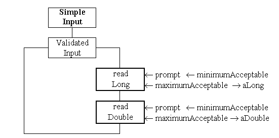

The input of integer values is described in sections 9.1 to 9.4 of the text book. (However there are some minor differences in the versions available from this page.) The ValidatedInput class is not a member of any package and so has to be placed into the current working directory (which shold be called something like way4!)
(These implementations make use of the Java 1.1 BufferedInput class, the book describes the use of the Java 1.0 DataInputStream class. The differences between these two classes are very technical and make no difference to the way the ValidatedInput classe is used).
The class diagram for the ValidatedInput class is as follows.

The static readLong() method engages the user in a dialogue, using the prompt supplied, to input a value between minimumAcceptable and maximumAcceptable, returning the integer value input by the user in aLong.
The static readDouble() method engages the user in a dialogue, using the prompt supplied, to input a value between minimumAcceptable and maximumAcceptable, returning the double value input by the user in aLong.


Read sections 9.1 and 9.4 of the text book to become familiar with the implementation of these classes.
Obtain the classes and compile and run the ValidatedInputDemonstration client. (This client is more complete than that described in the text book).
Make sure you are familiar with the use of this class by extending the demonstration client to input more values with different ranges.
These exercise has (re)introduced the differences between int, long, float and double primitve numeric types; and casting between them. Reinforce your understanding of these differences by reading Appendix A1 and A2 of the text book.